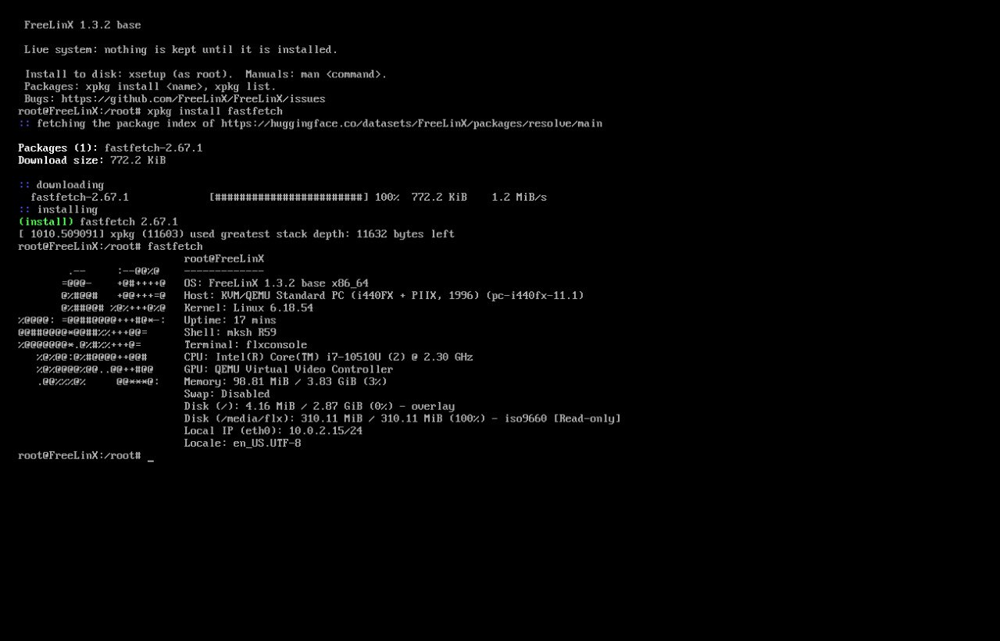

FreeLinX 1.3.2 base, live session: the banner, an xpkg install of fastfetch, and fastfetch itself. Note the shell (mksh), the terminal (flxconsole), memory at 98 MB, and the two disks — the overlay and the read-only ISO at /media/flx.
/media/flx

prev | home | next: FAQ